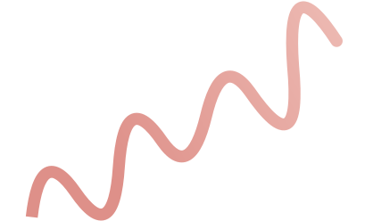
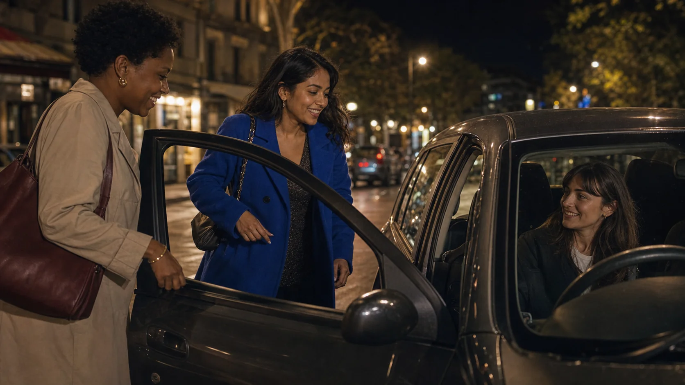
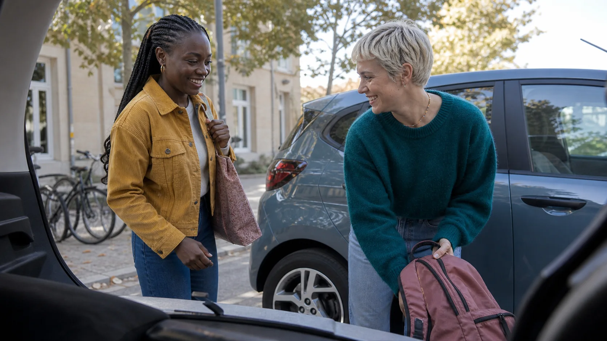
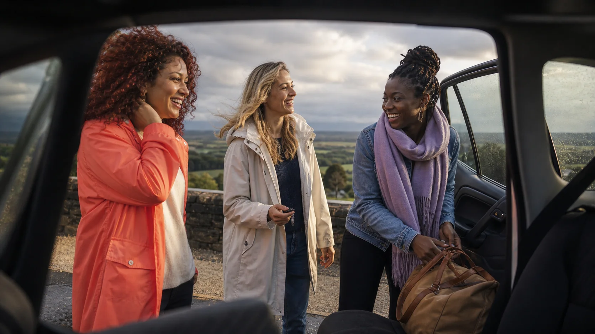
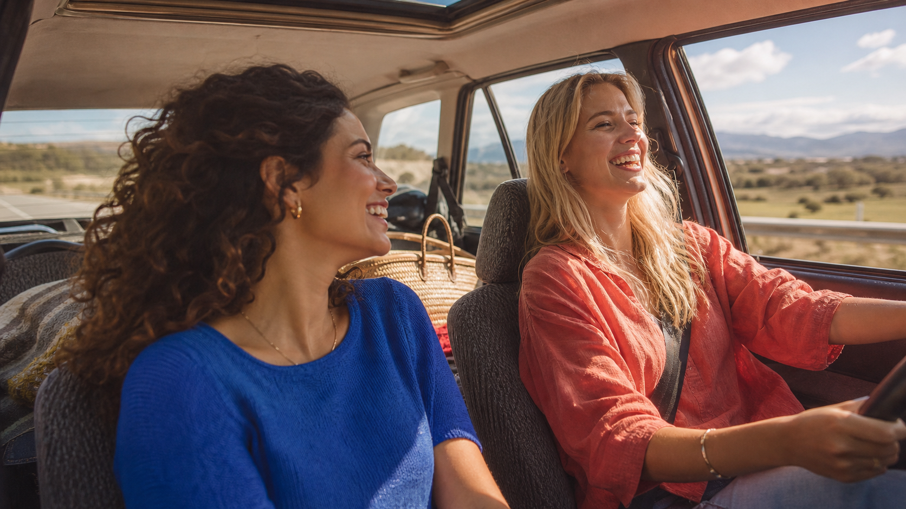

Sorties et retours tardifs
Pour rentrer après une soirée avec une conductrice ou une passagère choisie selon tes attentes.

Conductrice ou passagère, rejoins une communauté pensée pour les retours de soirée, les trajets du quotidien, les écoles, les vacances et les déplacements où la sérénité compte vraiment.



Chaque recherche donne les repères utiles avant de réserver : le contexte, le moment du trajet, les profils et la possibilité de choisir une conductrice ou une passagère en accord avec ses attentes.
Pour rentrer après une soirée avec une conductrice ou une passagère choisie selon tes attentes.
Pour installer des habitudes de déplacement lisibles, répétables et moins anonymes.

Vacances, week-ends, événements : la même clarté avant de partager la route.
Comment ça marche · 3 étapes
On crée son profil, on propose ou réserve un trajet, puis on avance avec une communauté pensée pour les déplacements où la confiance n'est pas un détail.
Nom, prénom, bio, LadyCode et vérification d'identité — les bases du profil sont posées avant le premier trajet.
≈ 2 minSur l'app, tu peux chercher un trajet, faire une demande ou proposer ton propre trajet.
Demande + propositionAjoute les amies ou conductrices avec qui tout s'est bien passé, puis réserve à nouveau avec elles.
Amies + LadyCodeConfiance et sécurité
Profil vérifiéPièce d'identité + selfie confrontés.
Récap du trajetLieu, horaire et événement partenaire sans ambiguïté.
Message avant trajetÉchange direct pour confirmer les détails utiles.
Message directUne précision, un retard ou un changement se confirme simplement.
Infos du trajetHoraire, point de rendez-vous et événement partenaire restent accessibles.
Profil vérifiéLa conductrice garde ses signaux de confiance visibles.
Évaluations croiséesModérées par une équipe humaine, pas par un algorithme.
Signalements sous 24hUne vraie personne lit, qualifie, répond.
Exclusion fermeComportements confirmés à risque : pas de seconde chance.
Être partenaire
Concert, bar, festival ou soirée… ces partenaires vous permettent de rentrer sereinement avec Drive Lady après chaque événement !


Questions fréquentes